🎯 O que você vai conseguir fazer depois desse capítulo
- Diferenciar a pleura visceral da pleura parietal e reconhecer sua continuidade na raiz pulmonar.
- Descrever as 3 porções da pleura parietal (costal, diafragmática, mediastínica).
- Localizar os 4 recessos pleurais e identificar o de maior relevância clínica.
- Descrever a cúpula pleural e sua importância como limite tórax-pescoço.
- Compreender a formação do ligamento pulmonar e sua relação com a raiz pulmonar.
- Reconhecer a fisiologia da cavidade pleural: produção e reabsorção do líquido pleural.
- Diferenciar a vascularização e a inervação das pleuras parietal e visceral.
- Aplicar esse conhecimento à prática clínica: derrame pleural, dor referida e tumor de Pancoast.
🗺️ Generalidades das Pleuras
As pleuras são membranas serosas que envolvem os pulmões e revestem as paredes da cavidade pleural. Cada pleura forma um saco membranoso fechado (a cavidade pleural), um de cada lado do tórax.
🟢 São 2 pleuras (uma para cada pulmão), completamente independentes uma da outra — um pneumotórax de um lado não afeta diretamente a cavidade pleural do lado oposto.
As 2 Folhas
| Folha | Localização |
|---|
| Pleura visceral | Superfície pulmonar — aplica-se intimamente às faces do pulmão |
| Pleura parietal | Cavidade pleural (parede) — reveste o interior da cavidade torácica |
Ambas se continuam uma com a outra ao nível da raiz pulmonar e do ligamento pulmonar.
🎬 O fenômeno
A cavidade pleural é um espaço virtual em condições normais — as duas folhas ficam praticamente coladas, separadas só por uma finíssima lâmina de líquido seroso a baixa pressão. É essa "colagem" por pressão negativa que mantém o pulmão esticado, acompanhando os movimentos da caixa torácica. Quando ar ou líquido entram nesse espaço (pneumotórax, derrame pleural), o espaço virtual vira um espaço real — e o pulmão perde a aderência à parede, podendo colabar.
🧱 Pleura Visceral
- Aplica-se intimamente às faces pulmonares
- Faz parte integrante da superfície do pulmão — une-se a ele por fibras conjuntivas que a fixam aos septos interlobulares
- Delgada e transparente — não pode ser dissecada (não se descola do parênquima pulmonar)
💭 Justamente por ser tão aderida ao parênquima, a pleura visceral é a que "vai junto" quando o pulmão se expande ou retrai — e, por ter só inervação autonômica (sem fibras de dor somática), é insensível à dor (ver Inervação), diferente da pleura parietal.
🧱 Pleura Parietal — Disposição Geral
Reveste o interior da cavidade torácica, tapizando as paredes do espaço onde os pulmões se encontram. Suas porções se continuam nos recessos pleurais.
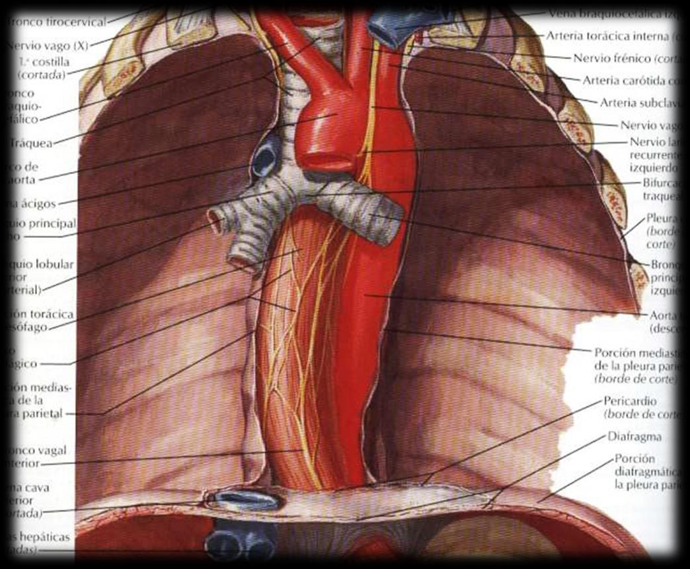
Dissecção torácica mostrando a pleura parietal em suas porções mediastínica e diafragmática, com traqueia, brônquios, aorta, ázigos e nervo vago
| Porção | Descrição |
|---|
| Costal | Recobre a superfície interna das costelas, separada delas pela fáscia endotorácica. Estende-se do orifício torácico superior (OTS) até as inserções do diafragma |
| Diafragmática | Cobre o hemidiafragma correspondente, aderindo intimamente a ele — especialmente no centro tendíneo |
| Mediastínica | Estende-se do canal costovertebral ao esterno, e do OTS ao diafragma. É interrompida pela raiz pulmonar. Molda-se sobre os órgãos do mediastino |
🩺 A porção mediastínica se deprime sob os arcos da veia ázigos e da aorta, formando 2 recessos: o recesso interázigo-esofágico e o recesso interaórtico-esofágico, conectados por fibras transversais de concavidade superior (fibras de Morosow).
🔻 Recessos Pleurais
São os "sacos" pleurais que se formam pela união das partes da pleura parietal — espaços onde o pulmão normalmente não penetra totalmente, mesmo na inspiração máxima.
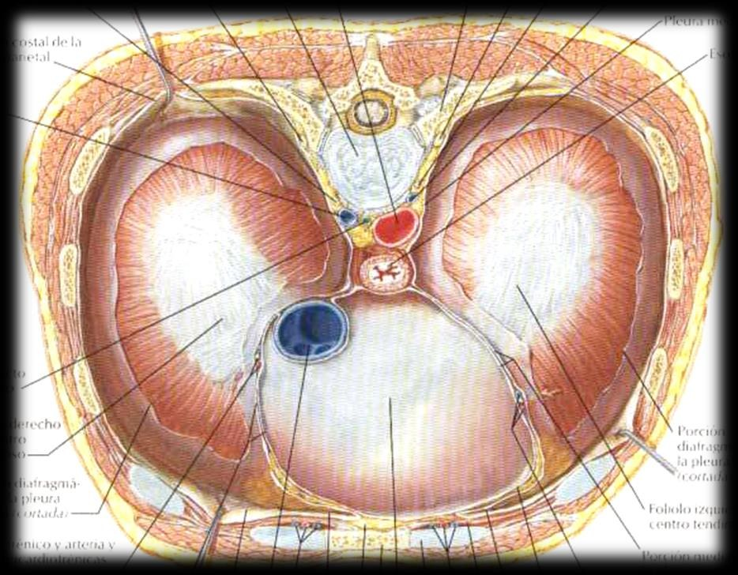
Vista superior (corte transversal) das 2 cavidades pleurais, mostrando o diafragma, os nervos frênicos direito e esquerdo, e o pericárdio central
| Recesso | Descrição |
|---|
| Costodiafragmático | Fenda pleural entre a parede torácica e o diafragma. Aberto na frente, torna-se progressivamente mais profundo lateral e posteriormente. Sua profundidade varia com o diafragma: estreito na expiração, amplia-se na inspiração |
| Costomediastínico | Anterior, retroesternal, agudo. Estende-se da 1ª articulação condroesternal até a 7ª cartilagem costal. À esquerda, na porção inferior, afasta-se da linha média (por causa do coração). A borda pulmonar anterior não alcança seu fundo |
| Vertebromediastínico | Arredondado, na região posterior da porção mediastínica da pleura parietal — forma um canal aos lados das vértebras |
| Frenicomediastínico | Pouco profundo, entre as porções diafragmática e mediastínica. À esquerda, desce posteriormente, continuando-se com o recesso costodiafragmático |
📌 O recesso costodiafragmático é o mais importante clinicamente — é o ponto mais baixo e mais dependente da cavidade pleural, onde derrames pleurais se acumulam primeiro (por gravidade) e onde se faz a toracocentese (punção pleural).
🎵 Mnemônico: "COSTO-diafragmático varia com a respiração (estreita/alarga); COSTO-mediastínico é o que o coração empurra pra esquerda." Os outros dois (vertebromediastínico e frenicomediastínico) são menores e mais posteriores — menos cobrados, mas ainda aparecem em prova de nível avançado.
⛑️ Cúpula Pleural (Domo Pleural)
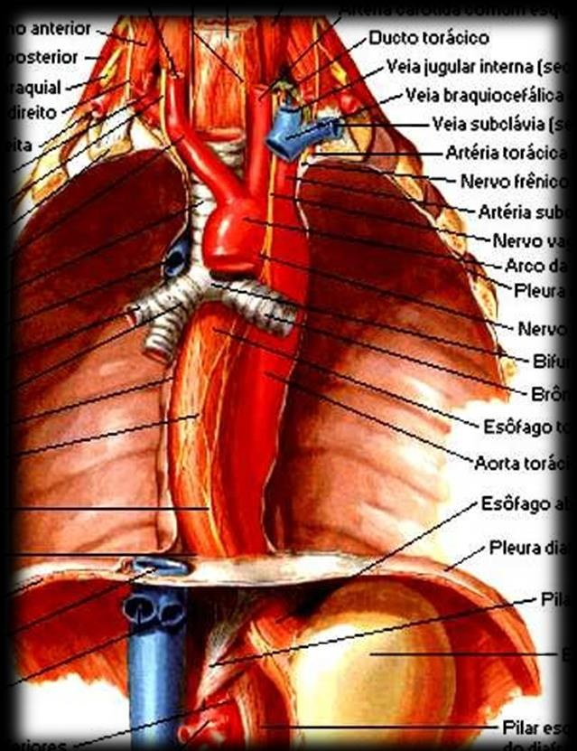
Ápice do tórax: cúpula pleural, grandes vasos (veia jugular interna, veia braquiocefálica, artéria subclávia), nervo frênico, nervo vago, ducto torácico e esôfago
É a pleura que recobre o vértice do pulmão — arredondada, estende-se da borda superior da 2ª costela e ultrapassa acima da 1ª costela.
- Reúne a porção costal e a mediastínica da pleura
- Forma o limite entre o tórax e o pescoço
- A fáscia endotorácica se espessa, ao nível da cúpula, para formar o diafragma fibroso cervicotorácico (de Bourgery; também chamada membrana suprapleural de Sibson)
🩺 Correlação clínica: a cúpula pleural fica em íntima relação com o plexo braquial, a artéria subclávia e a cadeia simpática cervical — um tumor de ápice pulmonar (tumor de Pancoast) pode invadir essas estruturas, causando dor no ombro/braço (plexo braquial) e Síndrome de Horner (cadeia simpática).
🧵 Fáscia Endotorácica
É a fáscia parietal do tórax, tapizando a face interna da caixa torácica. Delgada, formada por tecido conjuntivo frouxo com algumas fibras elásticas.
| Item | Descrição |
|---|
| Conteúdo | Elementos linfáticos e vasos sanguíneos destinados à pleura |
| Extensão | Face costal, mediastínica da pleura e OTS. Quase inexistente ao nível do diafragma |
| Zonas de aderência | Inferior: em contato com a 12ª costela · Anterior: cartilagens costais · Posterior: região costovertebral |
🔗 União das Folhas Pleurais — Raiz Pulmonar e Ligamento Pulmonar
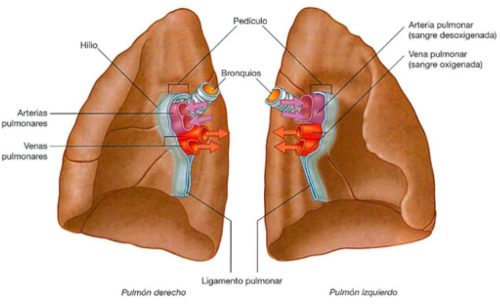
Pulmões direito e esquerdo mostrando hilio, pedículo pulmonar (artérias, veias, brônquio) e o ligamento pulmonar abaixo da raiz
Ao nível das raízes pulmonares, a pleura mediastínica reveste a face mediastínica, alcança as bordas do hilio pulmonar e se continua com a pleura visceral. Essa zona de reflexão das duas folhas é chamada pleura radicular.
🎬 O fenômeno
Na borda inferior da raiz pulmonar, as folhas pré-radicular e retro-radicular NÃO se reúnem imediatamente — elas descem juntas, "penduradas", formando o ligamento pulmonar. É como se a pleura, depois de envolver todo o pedículo vascular, ainda sobrasse um pouco e esse excedente caísse como uma prega dupla abaixo do hilio.
| Relação do ligamento pulmonar | Descrição |
|---|
| Medialmente | Esôfago — continua-se como pleura mediastínica |
| Lateralmente | Face mediastínica do pulmão — continua-se como pleura visceral |
| Abaixo | Continua-se como pleura diafragmática, ou pode ficar como borda livre, delgada e cortante |
| Conteúdo | Tecido conjuntivo, nervos, gânglios linfáticos e vasos de origem sistêmica |
📌 O ligamento pulmonar oblíquo desce para baixo e para trás — é uma referência cirúrgica importante em lobectomias/pneumonectomias, pois precisa ser seccionado para mobilizar completamente o pulmão.
💧 Cavidade Pleural — Fisiologia
| Parâmetro | Valor/Descrição |
|---|
| Estado normal | Espaço virtual (potencial) — pode aumentar quando ocupado por líquido ou gás |
| Volume de líquido pleural | ~10 mL, formado nas microvilosidades de ambas as folhas |
| Produção/reabsorção diária | Produz ~100 mL e reabsorve ~300 mL em 1 dia (a reabsorção supera a produção — por isso o volume normal se mantém baixo) |
| Capacidade de absorver gases | Sim — relevante na reabsorção espontânea de um pneumotórax pequeno |
| Função | Lubrificar e aumentar a aderência entre as duas folhas pleurais |
🟢 Repare no equilíbrio dinâmico: 100 mL produzidos vs. 300 mL reabsorvidos por dia — a capacidade de reabsorção é 3x maior que a produção basal. É esse "saldo negativo" fisiológico que mantém a cavidade pleural praticamente seca. Um derrame pleural clinicamente detectável representa uma ruptura importante desse equilíbrio (produção aumentada, reabsorção prejudicada, ou ambos).
🩸 Vascularização e Inervação da Pleura
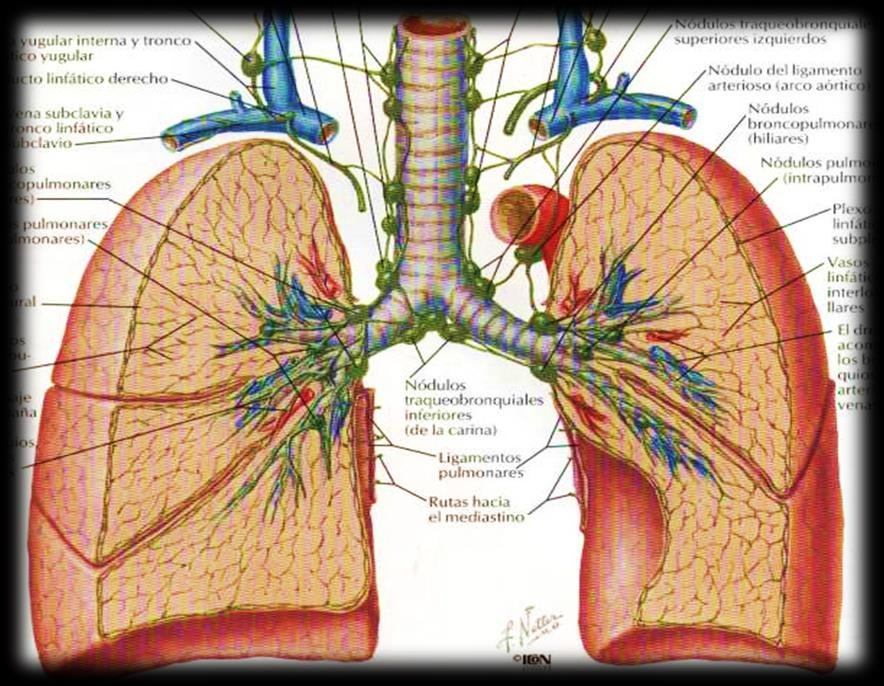
Drenagem linfática pulmonar e pleural: nódulos traqueobronquiais, broncopulmonares (hilares), intrapulmonares, e ligamentos pulmonares como via de drenagem
| Folha | Artérias |
|---|
| Pleura parietal | Artérias intercostais, artérias frênicas superiores e artérias mediastínicas |
| Pleura visceral | Rede arterial rica: artérias bronquiais (chegam pelos septos) + ramos do hilio e do ligamento pulmonar |
| Vasos linfáticos | Tributários dos linfonodos vizinhos (traqueobronquiais, broncopulmonares/hilares) |
| Folha | Inervação | Sensibilidade |
|---|
| Pleura parietal | Nervos intercostais (face costal e diafragmática) + nervos frênicos (face diafragmática e mediastínica) | Sensível à dor (inervação somática): dor aguda e bem localizada na face costal (intercostais); dor referida ao ombro quando a face diafragmática/mediastínica é irritada (frênico) |
| Pleura visceral | Fibras autonômicas viscerais (não somáticas) | Insensível à dor (só fibras autonômicas viscerais): responde apenas a estiramento, de forma vaga e mal localizada |
🩺 Correlação clínica fundamental: como a pleura PARIETAL é inervada pelos nervos frênicos (face diafragmática/mediastínica) e intercostais (face costal), uma irritação da pleura diafragmática (por exemplo, um abscesso subfrênico ou pneumonia de base) pode causar dor referida no ombro — porque o nervo frênico compartilha origem (C3-C4-C5) com os dermátomos do ombro. Já uma pleurite estritamente da face costal dói localizadamente na parede torácica, seguindo o dermátomo do nervo intercostal correspondente.
💭 É por isso que a dor pleurítica típica ("dor em pontada", piora com a respiração/tosse) vem da pleura PARIETAL — a pleura visceral, sozinha, praticamente não dói. Um tumor pulmonar central pode crescer bastante sem dor nenhuma, até invadir a pleura parietal ou a parede torácica.
⚠️ Atenção: o slide da Dra. Jasinta (pág. 27) traz "parietal: poco sensible; visceral: muy sensible", o oposto do correto. Estude a versão acima (anatomia padrão); se a prova seguir o slide ao pé da letra, confirme com a professora.
💪 Fixação rápida
✅ O que você deve lembrar
2 folhas (visceral cola no pulmão, parietal cola na parede) contínuas na raiz pulmonar via o ligamento pulmonar. 4 recessos pleurais — o costodiafragmático é o mais profundo/clinicamente relevante (toracocentese). A pleura PARIETAL dói (intercostais + frênicos); a VISCERAL quase não dói. Produção de líquido pleural (100mL/dia) < reabsorção (300mL/dia).
⚠️ Erro comum
Achar que a pleura visceral é a mais sensível à dor — é o contrário, ela é pouco sensível; quem dói é a parietal. E confundir o recesso costodiafragmático (o mais profundo, varia com a respiração) com o costomediastínico (fixo, empurrado pelo coração à esquerda).
📸 Figuras da Aula
Figuras dos slides da Dra. Jasinta Vázquez / Dra. Liz, organizadas pelas seções do capítulo. Clique para ampliar.
Generalidades das Pleuras
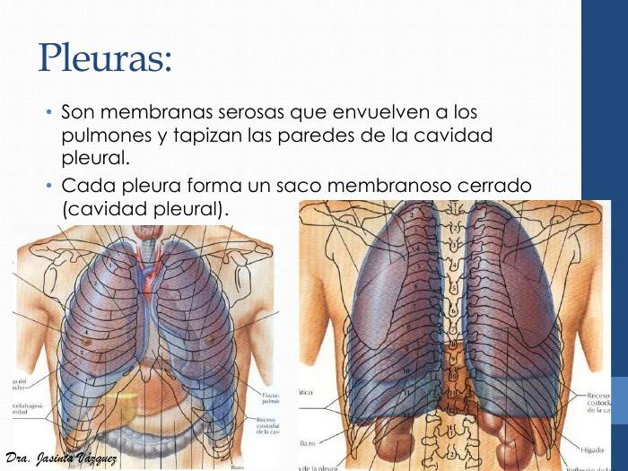
Projeção das pleuras na parede do tórax, em vista anterior e posterior: os pulmões envolvidos pelos sacos pleurais, com os recessos costodiafragmáticos (rotulados nas margens inferiores). Observe que o saco pleural desce abaixo da borda inferior do pulmão.
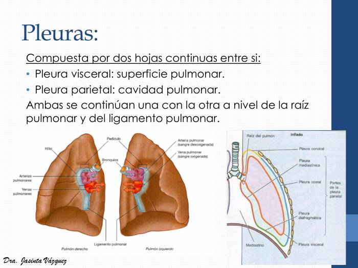
À esquerda, os pulmões isolados com hilo, pedículo (brônquios, artérias e veias pulmonares) e ligamento pulmonar. À direita, esquema do saco pleural: pleura cervical, mediastínica, costal, diafragmática (as 4 partes da pleura parietal) e pleura visceral, com a raiz do pulmão.
Pleura Visceral
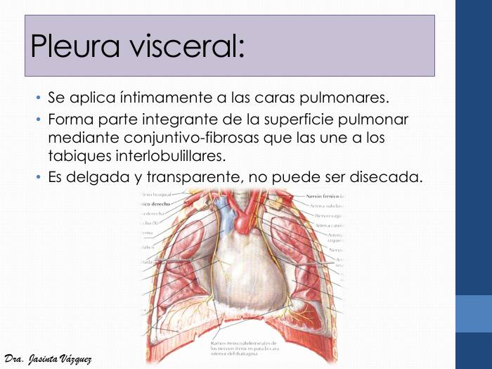
Tórax aberto em vista anterior: a pleura visceral reveste o pulmão e acompanha a superfície do órgão, sem se destacar dele. Observe a relação com o coração e o pericárdio no mediastino.
Pleura Parietal — Disposição Geral
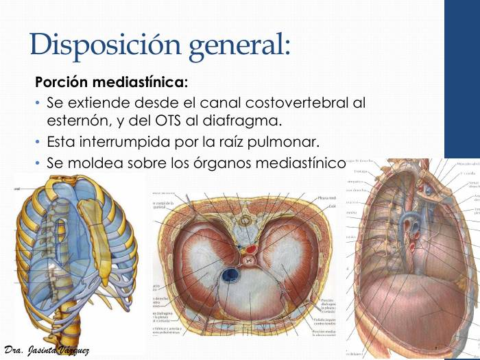
Três vistas da porção mediastínica da pleura parietal: caixa torácica, corte transversal (as duas cavidades pleurais de cada lado do mediastino) e vista lateral do mediastino. Observe que a pleura mediastínica se estende do canal costovertebral ao esterno.
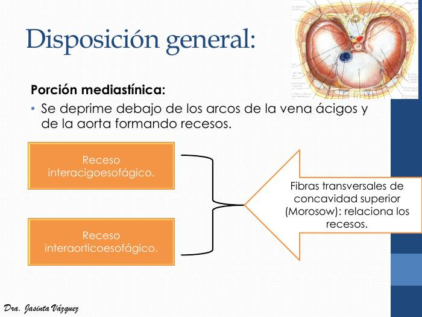
Corte transversal do tórax e esquema da aula: os recessos interázigo-esofágico e interaórtico-esofágico, unidos pelas fibras transversais de Morosow (concavidade superior).
Recessos Pleurais
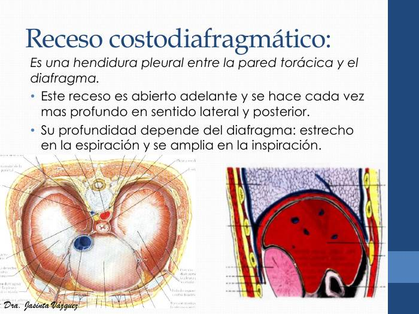
Recesso costodiafragmático: corte transversal do tórax e corte lateral mostrando a fenda entre a parede torácica e o diafragma. Observe que ele é aberto adiante e mais profundo lateral e posteriormente.
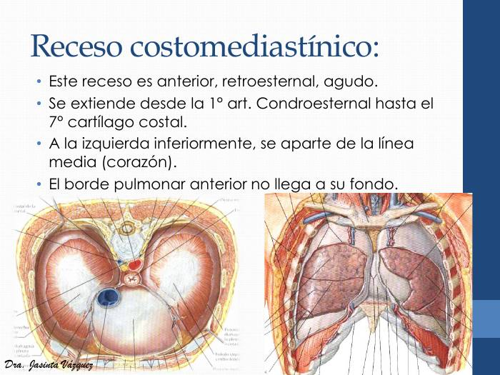
Recesso costomediastínico (anterior, retroesternal): corte transversal e vista anterior do tórax aberto. Observe que o contorno anterior do pulmão não alcança o fundo do recesso e que, à esquerda, ele se afasta da linha média pelo coração.
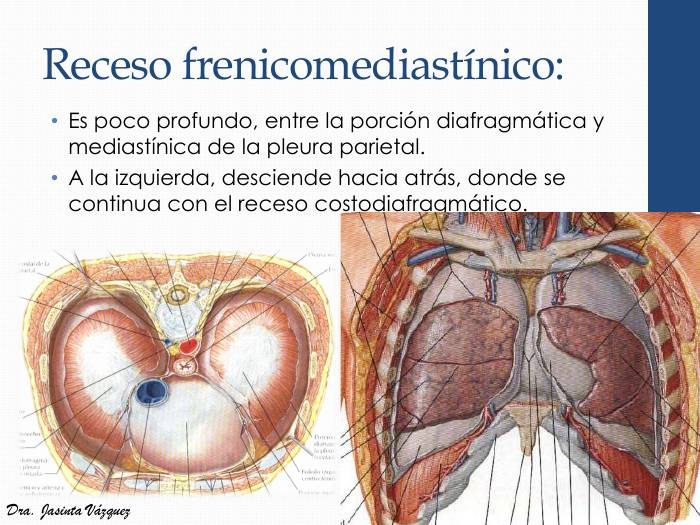
Recesso frenicomediastínico: corte transversal e vista anterior do tórax aberto, mostrando a pleura entre as porções diafragmática e mediastínica, que à esquerda desce para trás e continua com o recesso costodiafragmático.
Cúpula Pleural (Domo Pleural)
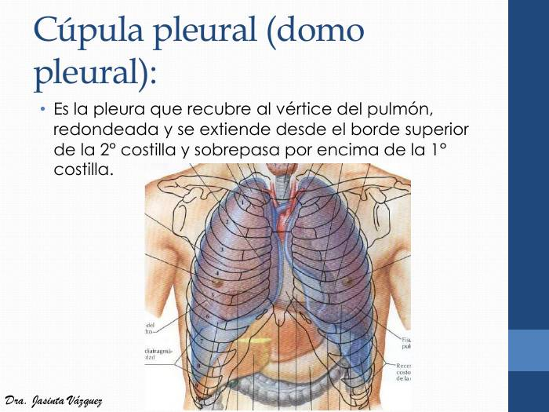
Projeção dos pulmões e das pleuras na parede torácica anterior: a cúpula pleural sobe acima da 1ª costela, no limite tórax-pescoço, e os recessos costodiafragmáticos aparecem nas margens inferiores.
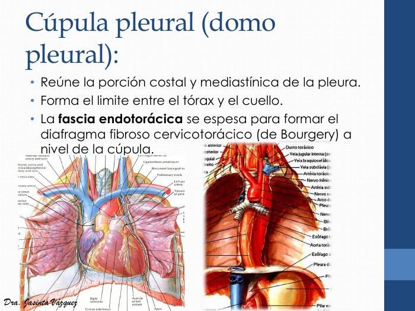
Ápice do tórax em duas vistas dissecadas (vasos do pescoço e grandes vasos): observe a relação da cúpula pleural com veia jugular interna, veia braquiocefálica, artéria subclávia, nervo frênico e o ducto torácico, rotulados à direita.
Fáscia Endotorácica
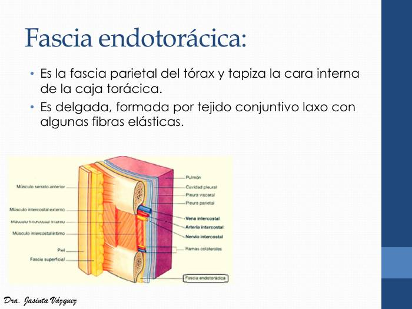
Corte da parede torácica com camadas rotuladas: pele, fáscia superficial, músculo serrátil anterior, intercostais externo/interno/íntimo, nervo, artéria e veia intercostais, fáscia endotorácica, pleura parietal, pleura visceral, cavidade pleural e pulmão. Observe que a fáscia endotorácica fica entre a parede e a pleura parietal.
Raiz Pulmonar e Ligamento Pulmonar
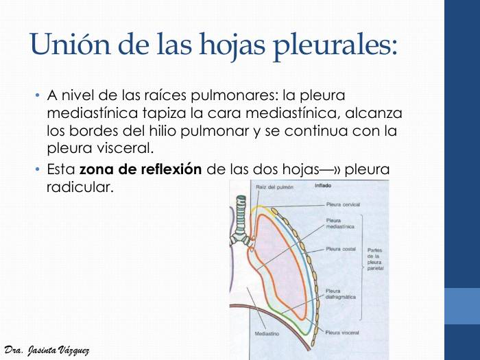
Esquema do saco pleural em corte: raiz do pulmão, pleura cervical, mediastínica, costal e diafragmática (partes da pleura parietal) e pleura visceral. A zona de reflexão ao redor da raiz é a pleura radicular.
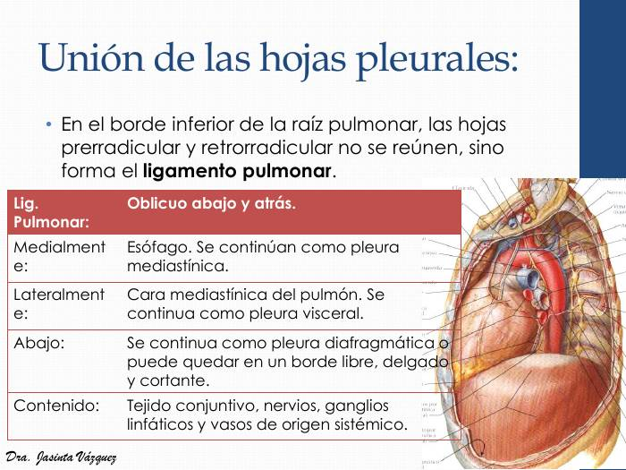
Quadro do ligamento pulmonar (oblíquo para baixo e para trás; medialmente esôfago, lateralmente face mediastínica do pulmão, abaixo pleura diafragmática ou borda livre; conteúdo: conjuntivo, nervos, linfonodos e vasos sistêmicos) sobre vista do mediastino com o pulmão rebatido.
Vascularização e Inervação da Pleura
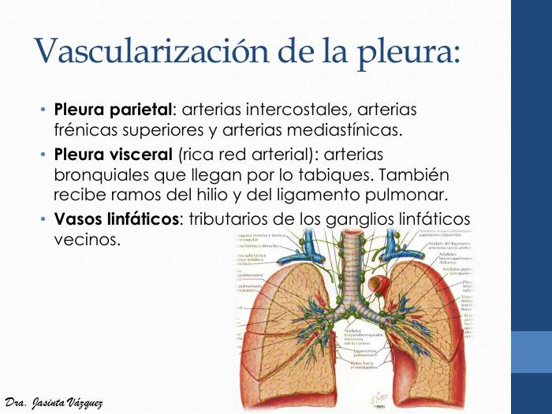
Pulmões e linfáticos em vista anterior: linfonodos traqueobronquiais, broncopulmonares (hilares), nódulos do ligamento pulmonar e vias linfáticas que drenam pulmão e pleura. Correlacione com a frase do slide: linfáticos tributários dos linfonodos vizinhos.